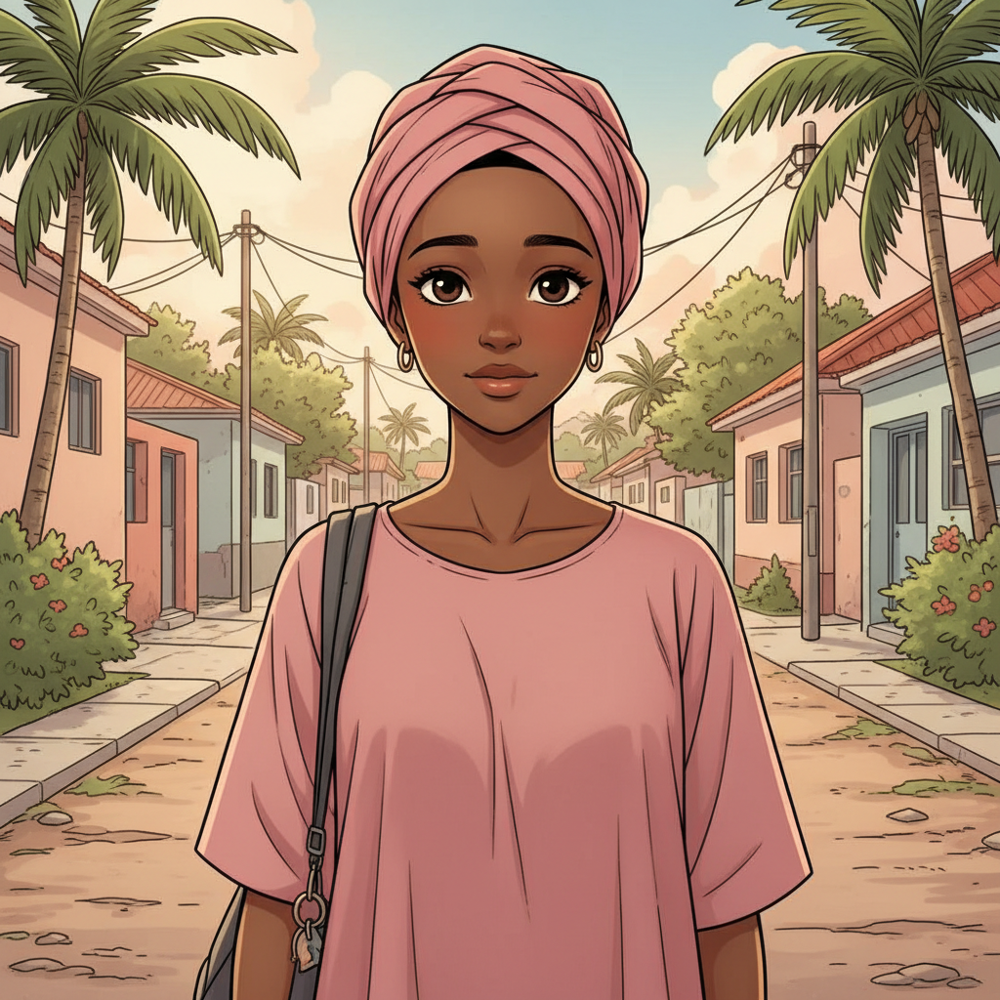
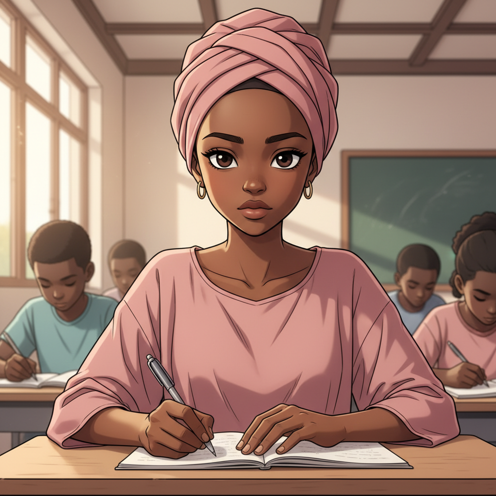
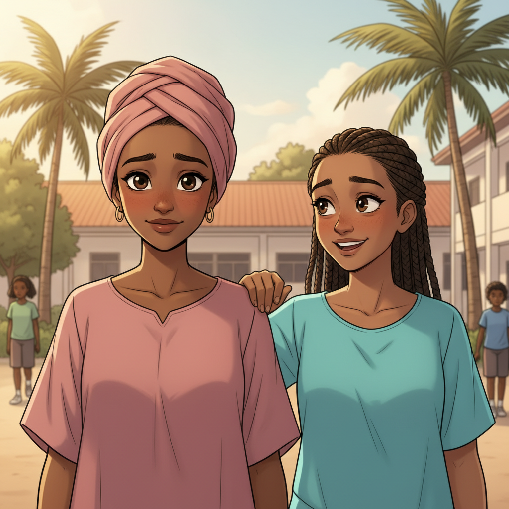
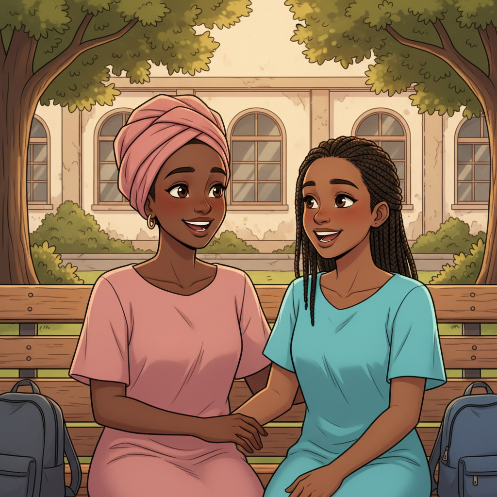
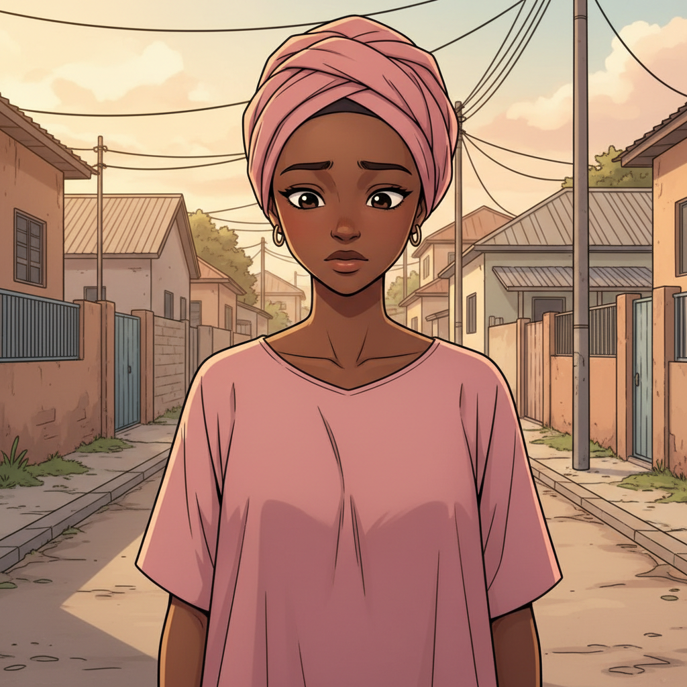
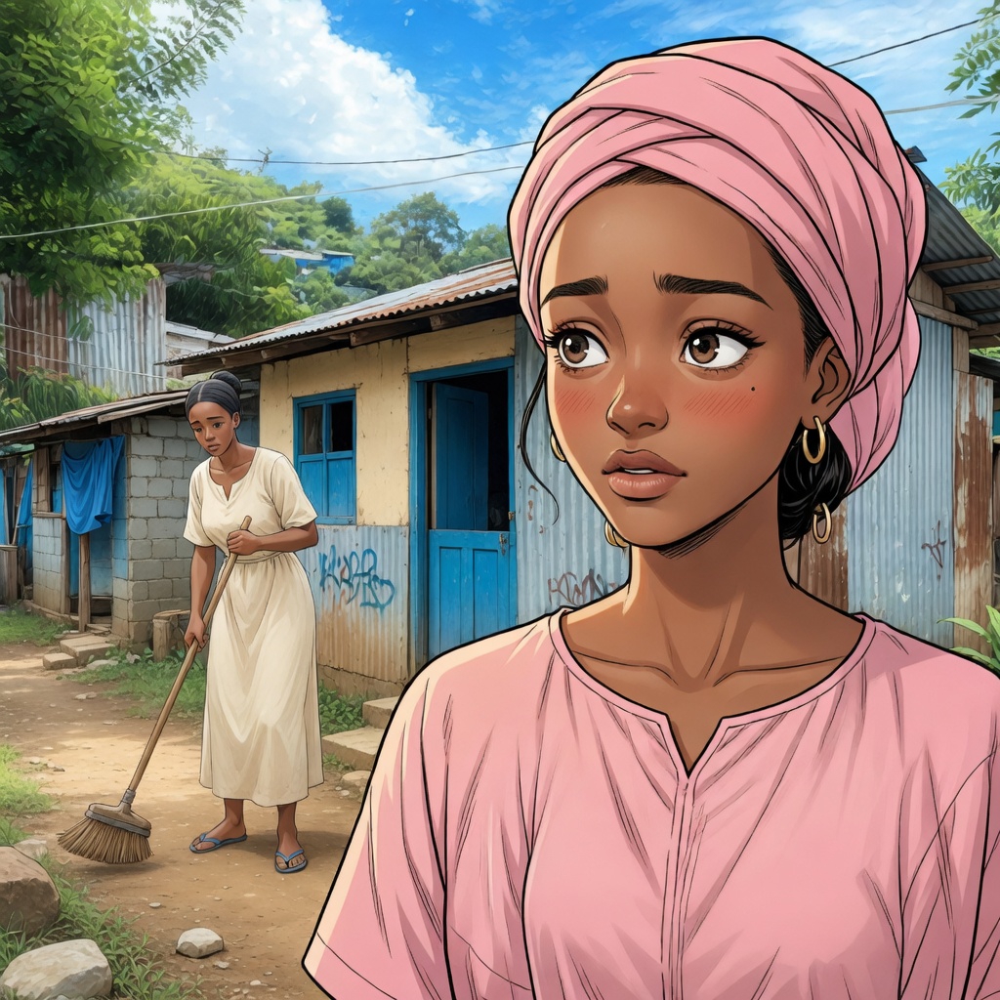
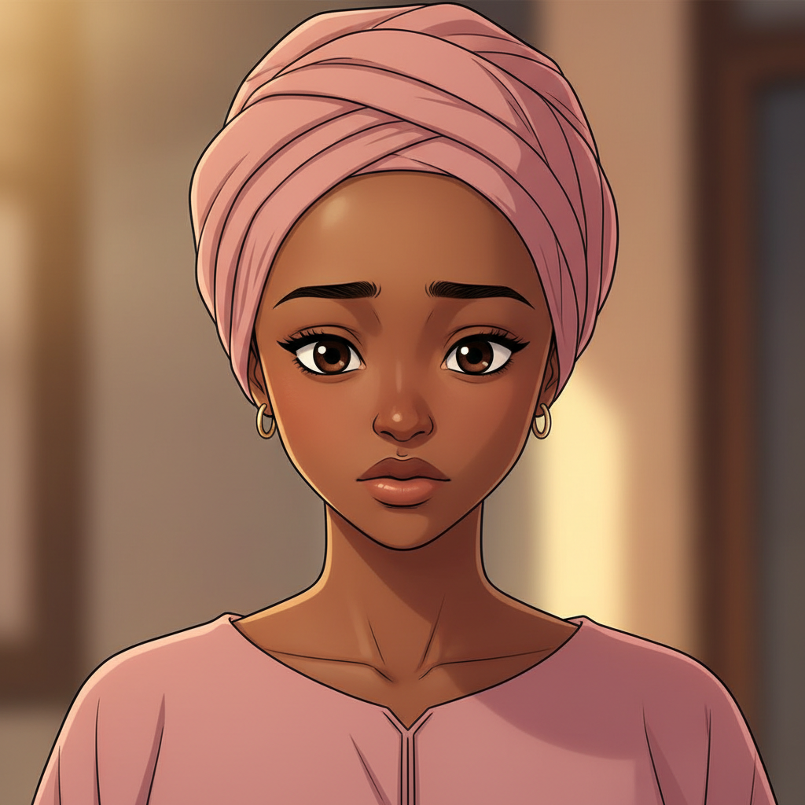
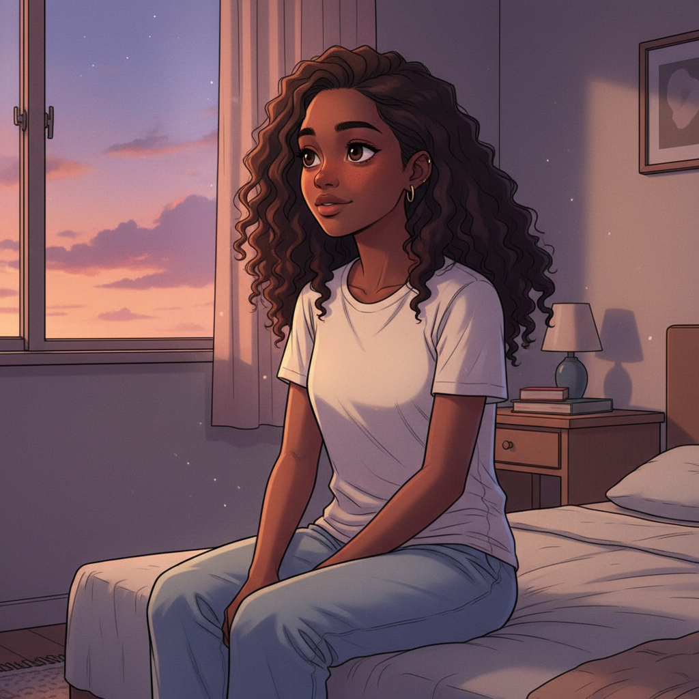
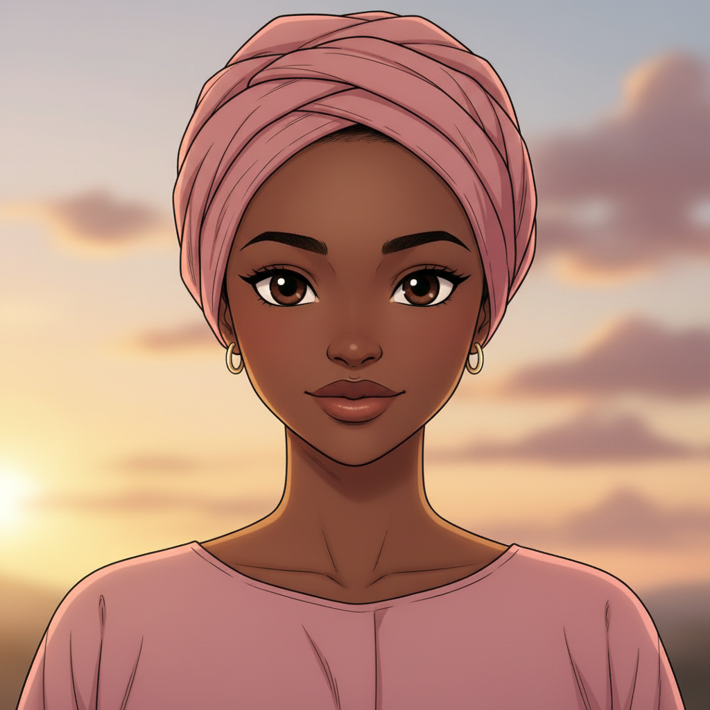
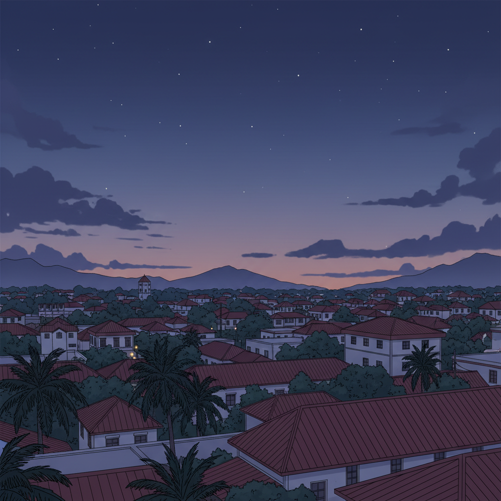

Le Courage d'Amina
ÉPISODE 1
Les Rêves d'Amina

"Mayotte. Une île où les rêves sont parfois aussi vastes que l'océan qui l'entoure."

"Amina a 16 ans. Elle vit entre les journées d'école, les rêves d'avenir et les inquiétudes qu'elle garde souvent pour elle."

"Au lycée, elle travaillait dur. Les études, c'était sa chance de construire quelque chose de mieux."
Il faut que je réussisse... pour nous deux.
scratch scratch...

"Avec Zali, tout semblait un peu plus léger."
Tu penses encore trop !
Peut-être...
HA HA

"Ensemble, elles partageaient leurs rêves, leurs peurs, leurs secrets."

"Mais en rentrant chez elle, les soucis revenaient."
Comment on va faire ce mois-ci...

"Amina voulait réussir. Pour elle. Pour sa mère. Pour ne plus voir l'inquiétude remplir la maison."
Je dois trouver un moyen de l'aider...

Si seulement je pouvais faire quelque chose... trouver un moyen d'aider...

"Le soir, dans sa chambre, Amina rêvait d'un avenir où tout serait plus simple."

Un jour, je réussirai. Un jour, maman n'aura plus à s'inquiéter.

"Elle ne savait pas encore que certaines rencontres peuvent changer le cours d'une vie. Pour le meilleur... ou pour le pire."